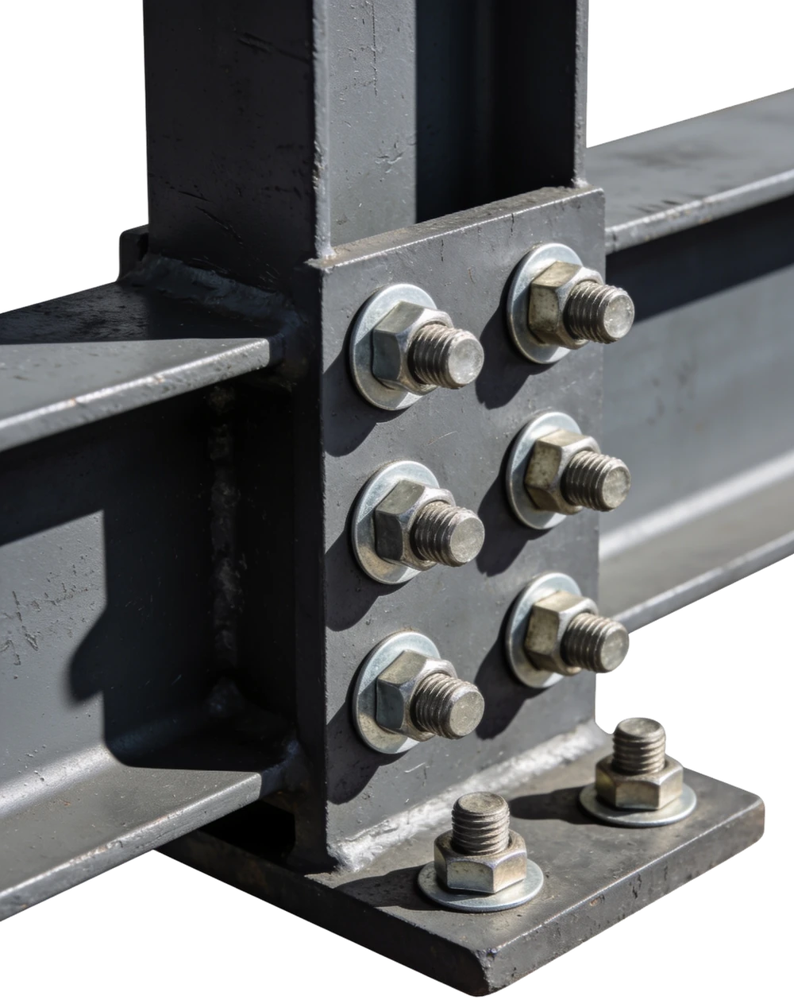

La ingeniería cruzó la frontera. La fábrica también.
NEX es la operación paraguaya de un grupo metalúrgico brasileño que fabrica estructura pesada desde 1989. La experiencia viene de +35 años, 12 estados de Brasil y obra entregada hasta en Guyana; la fabricación, el equipo y la respuesta comercial están acá, en Asunción.
Dónde entregamos estructura

L de luz libre, H de altura útil. Con esos dos datos y la superficie prevista ya dimensionamos la estructura y estimamos el tonelaje.
Un galpón nuestro, pieza por pieza
Siempre el mismo puñado de piezas, cortadas en CNC y repetidas en módulo constante. Lo que llega a tu terreno ya viene resuelto: se atornilla, no se improvisa.

El sistema que redefine la cubierta metálica
Vigas de alma senoidal con inercia variable y correas tipo joist galvanizadas: estructuras livianas, robustas y de montaje rápido, ideales para centros logísticos y galpones industriales.